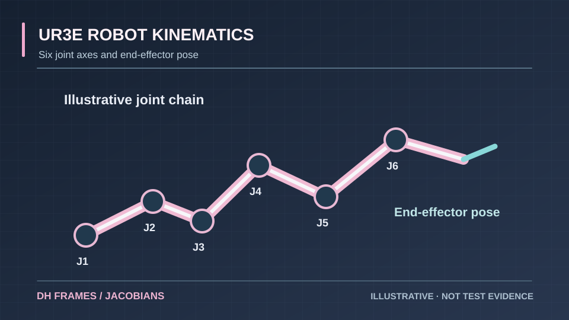
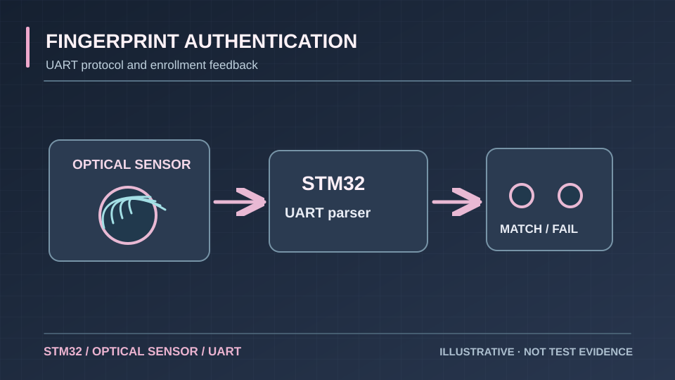
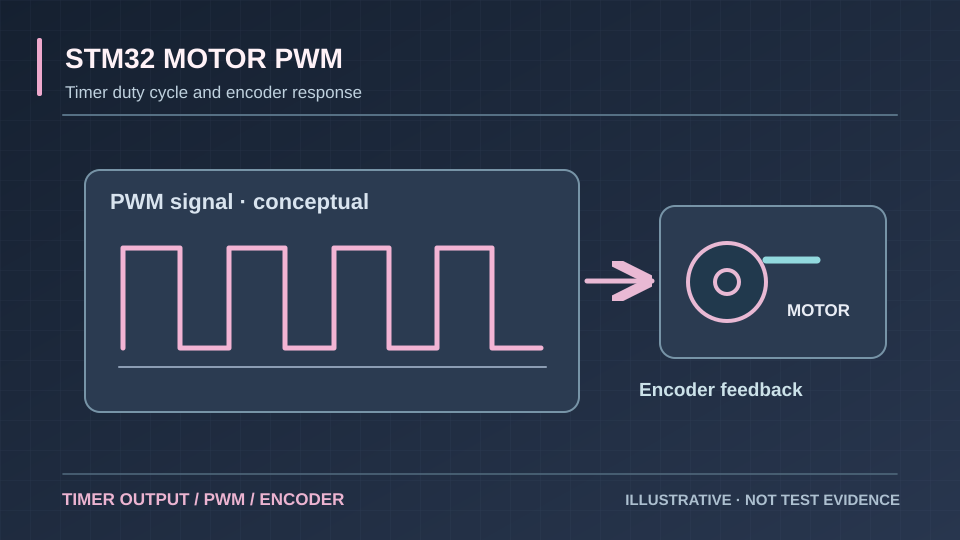
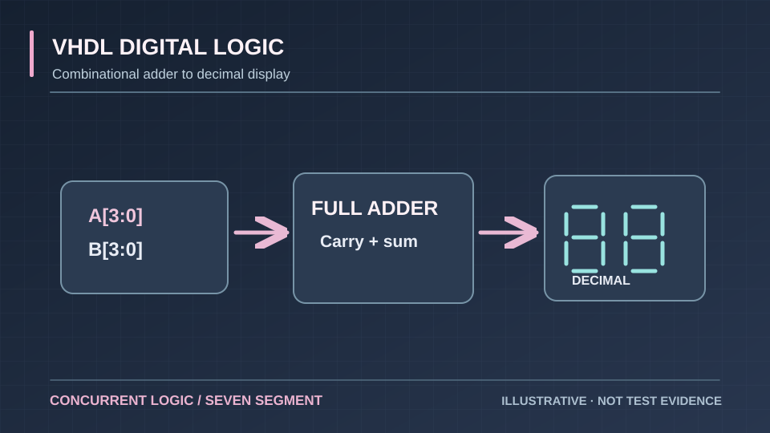
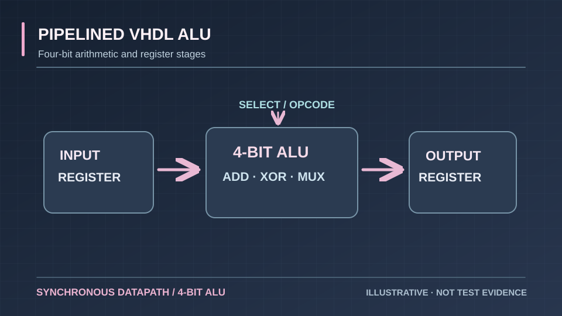
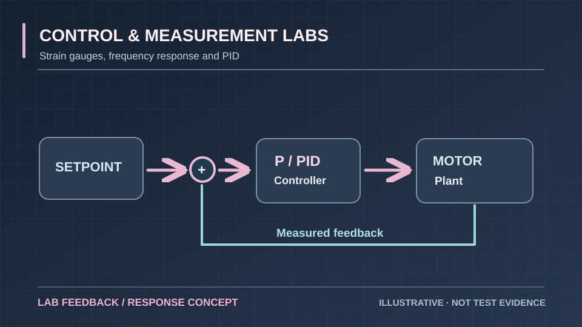

Lunar-regolith surface contamination analysis
Fiji/ImageJ automation for illumination correction, particle segmentation and morphology, surface coverage, optical darkening, and spatial uncertainty analysis.
Read research summary ↗ENGINEERING PROJECT DIRECTORY
Browse 16 detailed case studies and four additional project briefs, including NASA engineering, faculty-mentored Honors research, control systems, and technical coursework. Each entry distinguishes documented work from unavailable or reconstructed evidence.
Use Faculty research to find both student-initiated Honors Signature Experiences, Public code to find projects with verified source repositories, or filter by discipline. Four other documented investigations are summarized in the additional project briefs below. Search and filters cover all 20 entries; category counts update as you type while keeping shorter briefs distinct from full case studies. Explore the optional engineering workbench ↗.
Showing 16 of 16 case studies and 4 of 4 additional briefs
No matching projects or briefs.
Motion models and joint geometry
 GENERIC SCHEMATICNASA Marshall · OSTEM · 2026 · Independent assessmentNASA Robotic-Arm AssessmentHigh-vacuum feasibility, actuator loading, controls and verificationEvidenceSystems requirements and preliminary shoulder-loading analysis; further validation neededRead case study ↗
GENERIC SCHEMATICNASA Marshall · OSTEM · 2026 · Independent assessmentNASA Robotic-Arm AssessmentHigh-vacuum feasibility, actuator loading, controls and verificationEvidenceSystems requirements and preliminary shoulder-loading analysis; further validation neededRead case study ↗

SCHEMATICME422 · Spring 2026 · Group studyUR3e Robot KinematicsModeling six degrees of freedom with JacobiansEvidenceGroup analysis: a singular rank-5 poseRead case study ↗ SCHEMATICUNR · Faculty-mentored Honors Signature Experience · 2025Three-Link Leg DynamicsMATLAB/Simulink modeling of articulated human-leg movementEvidenceSimulation: joint motion and torqueView case study & public code ↗
SCHEMATICUNR · Faculty-mentored Honors Signature Experience · 2025Three-Link Leg DynamicsMATLAB/Simulink modeling of articulated human-leg movementEvidenceSimulation: joint motion and torqueView case study & public code ↗
Microcontrollers, firmware and digital logic

SCHEMATIC2025 · Embedded systemsFingerprint AuthenticationA small system with meaningful communication challengesEvidenceGroup demo: 24 templates across four usersRead case study ↗
SCHEMATICFall 2025 · Embedded control courseworkSTM32 Motor Timing & PWMFrom timer registers to measured motor behaviorEvidenceLab observation: motor and peripheral timingRead case study ↗
SCHEMATICEE421 · 2025 · Digital electronicsVHDL Digital LogicBinary arithmetic displayed in decimal without a clockEvidenceRTL implementation: four-bit arithmeticRead case study ↗
SCHEMATICEE421 · October 2025 · Digital designPipelined VHDL ALUA clocked four-bit arithmetic and logic unitEvidenceRTL implementation: synchronous four-bit ALURead case study ↗Experimental methods, acquisition and engineering evidence

SCHEMATICEE370L · Spring 2025 · Partner laboratory workControl & Measurement LabsStrain gauges, frequency response, and P/PID motor controlEvidenceLab observation: vibration near 49.3 HzRead case study ↗ RECONSTRUCTEDCapstone · 2026 · Health technologyIVerifyA non-invasive IV occlusion detection conceptEvidenceBench prototype: two-LED indicationRead case study ↗
RECONSTRUCTEDCapstone · 2026 · Health technologyIVerifyA non-invasive IV occlusion detection conceptEvidenceBench prototype: two-LED indicationRead case study ↗
 ILLUSTRATIVE2025–2026 · Test automationThermal Controller & LoggerMaking temperature measurements easier to trustEvidenceSource review: eight logging channelsView case study & public code ↗
ILLUSTRATIVE2025–2026 · Test automationThermal Controller & LoggerMaking temperature measurements easier to trustEvidenceSource review: eight logging channelsView case study & public code ↗
 INSTRUMENT PHOTOUNR · Faculty-mentored Honors Signature Experience · 2025Virtual Network AnalyzerMATLAB workflow for RF calibration and S-parameter analysisEvidenceWorkflow documented; plotted traces syntheticRead case study ↗
INSTRUMENT PHOTOUNR · Faculty-mentored Honors Signature Experience · 2025Virtual Network AnalyzerMATLAB workflow for RF calibration and S-parameter analysisEvidenceWorkflow documented; plotted traces syntheticRead case study ↗
 SCHEMATICEE421 · December 2025 · Semiconductor labHall-Effect Wafer MeasurementsCharacterizing charge carriers in a semiconductor waferEvidenceData audit: reported uncertainties dominateRead case study ↗
SCHEMATICEE421 · December 2025 · Semiconductor labHall-Effect Wafer MeasurementsCharacterizing charge carriers in a semiconductor waferEvidenceData audit: reported uncertainties dominateRead case study ↗
Engineering models, interaction and automation
 MODEL DATAGitHub · Electrical simulationProDriver SimPutting LED-driver behavior into a modelEvidenceCalculation: 26.82 W and 35.76 W outputsView case study & public code ↗
MODEL DATAGitHub · Electrical simulationProDriver SimPutting LED-driver behavior into a modelEvidenceCalculation: 26.82 W and 35.76 W outputsView case study & public code ↗
 SYSTEM DIAGRAMGitHub · Human interactionHueMotionTurning hand gestures into lighting responsesEvidenceCode audit: eight scenes; 11 offline testsView case study & public code ↗
SYSTEM DIAGRAMGitHub · Human interactionHueMotionTurning hand gestures into lighting responsesEvidenceCode audit: eight scenes; 11 offline testsView case study & public code ↗
 SYSTEM DIAGRAMGitHub · Lighting controlDMX ControllerA browser interface connected to physical lightsEvidenceCalculated minimum DMX frame: 22.708 msView case study & public code ↗
SYSTEM DIAGRAMGitHub · Lighting controlDMX ControllerA browser interface connected to physical lightsEvidenceCalculated minimum DMX frame: 22.708 msView case study & public code ↗
 WORKFLOWCS646 · Fall 2026 · Operating systems courseworkPowerShell Systems & ConcurrencyInventory, safe CSV processing, and synchronized parallel tasksEvidenceHistorical results: serial vs parallel timingRead case study ↗
WORKFLOWCS646 · Fall 2026 · Operating systems courseworkPowerShell Systems & ConcurrencyInventory, safe CSV processing, and synchronized parallel tasksEvidenceHistorical results: serial vs parallel timingRead case study ↗
ADDITIONAL DOCUMENTED WORK / CV AND RÉSUMÉ
These activities are documented in the CV and résumé but are not counted among the 16 full case studies above. The linked summaries explain methods and scope without publishing internal NASA imagery, test files, or unverified performance results.
Showing 4 of 4 additional briefs
Fiji/ImageJ automation for illumination correction, particle segmentation and morphology, surface coverage, optical darkening, and spatial uncertainty analysis.
Read research summary ↗Physics-based force modeling, Python/PyQt6 test interfaces, control integration, hardware-free simulation, and force-displacement analysis for non-nuclear analogs.
Read research summary ↗Excel/VBA batch reduction of force-displacement data, including baseline corrections, friction metrics, grouped statistics, quality checks, and reporting.
Read research summary ↗A separate Arduino-based control exercise using Hall-effect encoder feedback, PWM, back-EMF observations, and comparative response testing under variable loading.
Read control project brief ↗